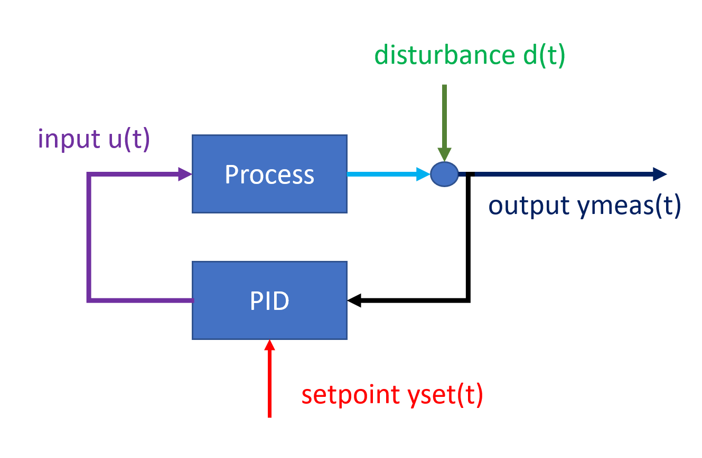
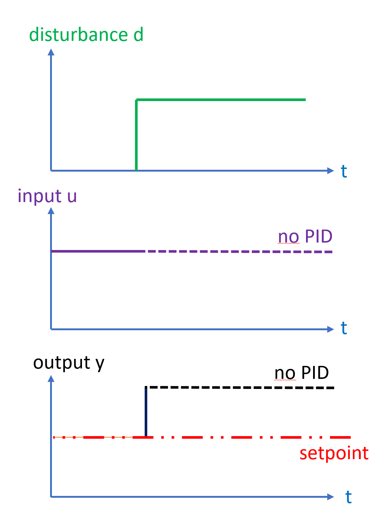

Closed-loop disturbance signal estimation
What is it?
The disturbance is an additive signal that moves the output of the given unit process. Counter-acting disturbances are the very reason that feedback controllers are used, they observe the deviation between setpoint and measurement of the plant output, and change one-or more inputs to counter-act the disturbance.

Example: step disturbance
Consider a step disturbance acting on a system without feedback

The feedback is directly fed through to the output, while the input is constant.
Now consider and compare the same step disturbance, but this time a PID-controller counter-acts the disturbance

The disturbance initally appears on the system output, then is slowly counter-acted by change of the manipulated
variable u by feedback control, thus moving the effect of the disturbance from the output y to the
manipualted u.
Observing the offset between setpoint and measurement gives a "high-frequency" d_HF response and is seen
first, while the change in u is gradual and "low-frequency" d_LF and the approach
will attempt to combine the two
The aim of this section is to develop an algorithm to estimate the the un-meausred disturbance d
indirectly based on the measured u and e
Why is distrubance signal estimation important?
Disturbances are the "action" or "excitation" that causes feedback-controlled systems to move, if these signals could be estimated, then a disturbance could be "played back" in a simulation and different changes to the control system could be assesed and compared.
Describing the disturbance signal is also important for identifying the other components of a feedback-controlled system correctly, as disturbances are "non-white" noise that tends to skew estimates (destroying the regression accuracy) if not accounted for.
What are the challenges?
The challenge in describing disturbances in feedback-systems is that the feedback aims to counter-act the very disturbance which needs to be described by changing the manipulated variable.
Thus, the effect of the disturbance is in the short-term seen on the system output y,
but in the long-term the effects of the disturbance are seen on the feedback-manipulated variable
u. The PID-controller will act with some time-constant on u,and this change in u
will again act back on the output y with a delay or dynamic behavior that is
given by the process(decribed by the process model.) To know what amplitude a disturbance has,
requires knowledge of how much effect (or "gain") the change in manipulated variable u will
have caused on the output y.
Thus the two tasks of estimating the disturbance and estimating the process model are linked, and thus they likely need to be solved jointly.
Approach
The chosen approach to solve the linked problem of solving for process model and disturbancee signal is sequential(as opposed to simulatenous), meaning that the algorithm first estimates a disturbance signal, then what process model best describes the data for the given disturbance signal, then the estimate of the disturbance is updated using the model, back-and-forth until both estimates hopefully converge.
Let the control deviation e be defined as
e = (y_meas-y_set)
Further, the disturbance is divded into a high-frequency part d_HF
and a low-frequency part d_LF,
and it is assumed that
d = d_HF+d_LF = d_HF(e)+ d_LF(u)
d_LF will in general also be a function of the process model, especially the process gain.
First, model-free estimate
In order to initalize the sequential estimation, a model-free estimate of the disturbance is require initally.
For the first iteration, all process dynamics and nonlinearities are neglected, a linear static model essentially boils down to estimating the process gain.

This first estimate of the process gain G in a linear model y = G x u
is found by the approximation
G = max(e)/(max(u)-min(u))
Separating the state of the system from the output
Let the state X be defined as the output minus the disturbance:
y = x + d
When solving the process model for a given disturbance, the identification is
done on the un-meausred x found from
x = y-d
Algorithm
(In the case of no setpoint changes in the data set)
- Guess the process gain, as shown above
- Disturbance("run1"):Estiamte the disturbance for the linear static process gain
- Model("run1"):Subtract the above disturbance signal from y, and run UnitIdentifier.IdentifyLinearAndStatic to estimate
- Disturbance("run2"):Estimate the disturbance using the above process model
- Model("run2"): Subtract the above disturbance signal from y, and run UnitIdentifier.Linear
- Disturbance("run3"):Estimate the disturbance using the above process model
- Model("run3"): Subtract the above disturbance signal from y, and run UnitIdentifier.Linear